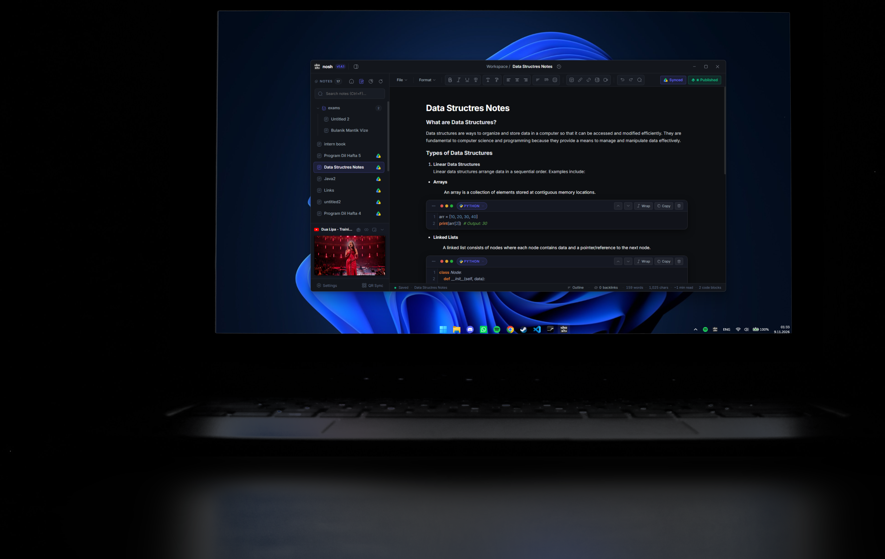

Nosh is a lightweight desktop notepad for developers and CS students. Write notes with real code blocks in 25 languages, connect ideas with wiki-links, capture thoughts from anywhere with a global hotkey, and keep everything in sync across your devices.

Heavier tools get in the way. Plain text lacks syntax. Nosh provides focused, real-time developer ergonomics with local-first speed.
Write documentation and code side-by-side without leaving your notes. Powered by the embedded CodeMirror engine, every block provides real syntax highlighting, smart tab indentation, and clean developer utilities.
Coding tutorials, technical conference talks, and focus study beats live directly inside Nosh. Never lose your place alt-tabbing between your IDE, browser, and music apps.
Turn scattered notes into an interconnected web of engineering knowledge. Type [[Topic]] anywhere to create bidirectional links between notes, concepts, and code libraries.
Ctrl + Alt + NWhen an idea, bug solution, or snippet strikes while you're working in VS Code, Terminal, or your browser, you shouldn't have to stop what you're doing. A single global keystroke brings up a floating quick-capture HUD.
Enter to stash it directly into your Nosh inbox and immediately return to your code.
#todo or #bug on the fly for automated workspace categorization.
Your notes never touch proprietary ad-tracking clouds. Connect desktop and mobile devices seamlessly with authenticated QR pairing, take snapshots before refactoring notes, and back up to your personal Google Drive.
Free, standalone desktop software. No account registration or subscriptions required.
Ctrl+Alt+N): System-wide global hotkey to summon a lightweight scratchpad overlay from any active application.
[[Wiki-Links]] and explore how your ideas connect on an interactive graph.
Nosh is actively maintained by Eren Altunkapak. Whether you'd like support for another programming language, noticed a bug, or have ideas for the roadmap, reach out anytime.